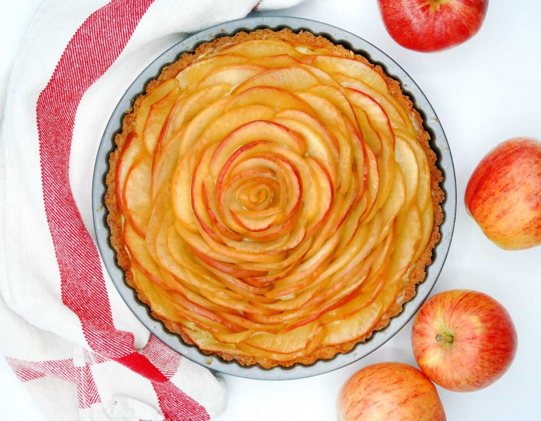

Receta de Tarta de Manzana
Ingredientes:
- 3 manzanas grandes
- 200g de harina de trigo
- 100g de mantequilla fría cortada en cubos
- 80g de azúcar
- 1 huevo
- 1 cucharadita de canela en polvo
- Jugo de medio limón
- Pizca de sal
Instrucciones:
- Precalienta el horno a 180°C.
-
Prepara la masa: en un bol grande, mezcla la harina, el azúcar y la sal.
-
Añade la manteca fría y trabaja con los dedos hasta obtener una textura
arenosa.
-
Agrega el huevo y mezcla hasta formar una masa homogénea. Envuelve en
film transparente y refrigera por 30 minutos.
-
Pela y corta las manzanas en rodajas finas. Rocíalas con jugo de limón
para evitar que se oxiden.
-
Estira la masa sobre una superficie enharinada y forra un molde para
tarta engrasado y enharinado.
- Coloca las rodajas de manzana sobre la masa en forma de espiral.
- Esparce la canela y un poco de azúcar por encima de las manzanas.
-
Hornea durante 40-45 minutos o hasta que la masa esté dorada y las
manzanas cocidas.
- Deja enfriar antes de servir. ¡Disfruta tu tarta de manzana!
Video de la Receta:
Imagen de la Tarta:

Más Recetas:
Tabla de Tiempos de Cocción:
| Fruta |
Tiempo de Cocción |
| Manzana |
40-45 minutos |
| Frutilla |
15-20 minutos |